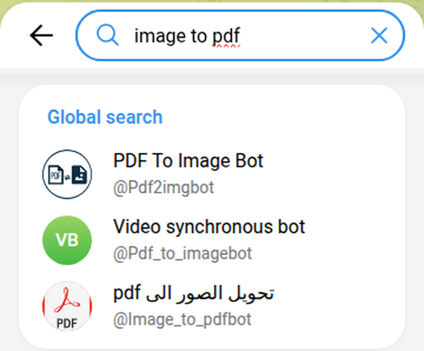

Telegram Converter Bots: 96 Messaged, 25 Did the Job
I sent /start to 96 Telegram converter bots on 23 October 2026, and the next night a real file to each of the 32 that answered and said they do the job. 25 converted it. 47 bots never answered at all, and 11 of the 49 that did wanted something first: join a channel, start another bot, or, in one case, subscribe after it had already done the work and was holding my file.
Converter bots are the plumbing of Telegram. You have a video and want the sound, a voice message you can’t play out loud, a photo that has to be a PDF, a file you want to share as a link. Search Telegram for any of those and you get dozens of bots with nearly the same name. I wanted to know which of them actually do the job when you send them a real file.
How I tested
- Corpus. 20 searches in Telegram’s own search box, taken from what Google suggests for “telegram converter bot”: converter, convert, file converter, video to mp3, video to audio, mp3 converter, audio converter, voice to text, speech to text, transcribe, pdf, pdf converter, image to pdf, file to link, file to url, and the Russian and Ukrainian words people type for the same thing. That gave 142 different bots. 12 of them only appeared because my account had used them before, so I dropped those and kept the 130 a new user would see.
- None of the 142 had the verified badge.
- Not every “converter” converts files. 37 of the 130 say in their own description that they do something else: 11 read text out loud, 5 only take YouTube links, 5 fetch a file from a URL, 4 turn MP3s into voice messages, 3 make stickers or GIFs. The other 9: two VPN and proxy config converters, two that only push an app or a link, a currency calculator, a movie finder, a ringtone maker, a PDF-to-image bot and one that just says to go to another bot. I didn’t message those.
- Web picks. I added three bots that lists on the web recommend: @newfileconverterbot and @filetobot from a respond.io list, and @voicybot. None of the three came up in Telegram’s search for any of my 20 searches.
/start, then 10 seconds. 96 bots got/start. Then each bot that answered got one test file that matched what it said it does.- The files were mine. A 10-second video of colour bars with a 440 Hz tone. A 4.6-second voice message saying “Please remind Oksana to bring the blue folder on Thursday at nine.” A 126-byte text file. A photo of a card that says CONVERTER TEST. No YouTube or Instagram links, nothing copyrighted, nothing paid for, no channel joined.
What counted as a pass, decided before the first file went out:
- Video to audio: an audio file comes back, it opens, and it’s 10 seconds long (give or take one).
- Voice to text: at least 11 of the 12 words come back, in order. Punctuation and capitals don’t matter.
- File to link: the link opens in a browser with no Telegram login and gives back exactly my file, byte for byte. Then I opened it again a day later and three days later.
- Image to PDF: a PDF comes back, it opens, and the page shows the card.
Half of them never answered
What happened after /start | Bots | Who |
|---|---|---|
| Silent | 47 | Including @FileConverterBot, the bot respond.io’s link actually points to |
| “Join our channel first” | 7 | Three of them with the same Arabic text and the same invite link |
| Broadcast list | 4 | Manybot lists; /off paused each one |
| Empty shell | 2 | “Go to @ControllerBot to connect a new channel” |
| Answered, but does something else | 4 | A music tag editor, an OGG-to-MP3 converter, a video-to-circle bot, a music-upload helper |
| Got a test file | 32 | 19 voice-to-text, 4 file-to-link, 9 that convert video or images |
I checked the 47 silent chats again up to 25 minutes later. None of them had answered. Some of them sit at the top of search: the first result for “file converter” is silent, and so is the first result for “video to mp3”, a bot with 14,112 monthly users.
Search has a second trap. For three of my searches the top result does the opposite of what I typed. “Image to pdf” puts a PDF-to-image bot first, “speech to text” puts a text-to-speech bot first, and “file to url” puts a bot that downloads URLs into files first. Read the description before you send anything.

The walls are the part to watch. A bot that wants you to join a channel before it does anything is asking you to grow someone’s audience in exchange for a conversion your phone can probably do itself. Three image-to-PDF and video-to-GIF bots with different names sent the same Arabic message and the same invite link, so they’re one operator with three doors.
Voice to text: 15 of 19 gave the sentence back
This was the easy job. Most bots answered within a few seconds, and almost all of them wrote “9” instead of “nine”. That’s why the pass mark was 11 of 12 words. Two got all twelve.
| Bot | What came back |
|---|---|
| @Speechpro_ASR_bot, @voice_magicbot | 12 of 12 words |
| @QuillAI_Bot | 11 of 12, then an offer to summarise it with AI. 10 free minutes; using the bot means accepting its terms |
| @AudioMessBot, @NoCorny_voice_bot, @audio_transcribe_vgbot, @duck_transcriber_bot, @golosovoe_vtekst_bot, @speech_transcriber_bot, @speechtotextrobot, @tg_transcribebot, @transcriber_tg_bot, @voice_to_text_tg_bot, @voicewhisper_bot | 11 of 12 (“9” for “nine”; one wrote “oxana”) |
| @VText_Transcribe_Bot | The right meaning, but translated into Russian. After I switched its output language to English and sent the file again: 11 of 12 |
| @VoiceMsgBot (12,730 monthly users) | One Russian letter: “и” |
| @anti_voicebot | “Couldn’t recognise speech” (in Russian) |
| @chat_s2t_bot | Asked me for “the next fragment to edit” |
| @voicybot (16,657 monthly users) | “Subscribe to @golden_borodutch to use up to 50 free Voicy transcriptions” |
The failures share a pattern. Three of the four answered in Russian and fell apart on an English sentence. Voicy, the one a web list recommended, is the only one that wanted something from me first.
Video, images and links: menus, walls and a link that lasted five minutes
| Bot | Job | Result |
|---|---|---|
| @MusicEditorTagbot | Video to audio | M4A, 10.0 s, no questions asked |
| @AudioConvert_bot | Video to audio | Pick MP3 from a menu, get 10.06 s, then a “Try PRO” button |
| @allfilesconverterbot | Video and image | MP3 (10.06 s) and a one-page PDF. Runs on a token balance; 18 free left after my two |
| @newfileconverterbot | Video and image | MP3 (10.06 s) and a one-page PDF |
| @QuickConvertFileBot | Video and image | MP3 and PDF, after a resend. “10 conversions remaining today” |
| @ImageToPdfRobot | Image to PDF | One-page PDF, after a resend. It named the file after my first name |
| @PNG_PDF_ConverterBot | Image to PDF | Language menu first, then a one-page PDF |
| @mp3_kd_bot | Video to audio | Converted it, then: “The result is ready, but first you need to subscribe to the channel” |
| @images_topdf_bot | Image to PDF | “Go to SaleSeenBot, press Start, then come back” |
| @file2link_bot | File to link | Worked at first, byte for byte, from an http:// link. 25 and 72 hours later: “Not Found” |
| @filesto_bot | File to link | Worked once. Five minutes later: “File not found or expired.” |
| @photolinks_bot | File to link | Works, byte for byte, and still did 72 hours later |
| @reaperfiletolinkbot | File to link | “Join all Updates Channels to use the bot.” |
I opened every PDF. All five show the whole test card, with nothing cropped and no watermark. All five MP3s are 10.06 seconds long, which is just MP3 padding on a 10-second clip.
The “after a resend” results from three bots are my fault, not the bots’. I came back to their format menus 30 to 70 minutes after sending the file, and by then they had thrown it away (one said so in an ffmpeg error). I sent the file once more and pressed the button straight away, and all three worked. In normal use you press the button within seconds, so I counted them.
The worst wall in the whole test is @mp3_kd_bot. It took the file, did the conversion, and only then said I’d get the result after joining a channel. I didn’t join, so I never saw it. A wall at /start at least costs you nothing.
Do you need a bot for voice messages at all?
Telegram has its own button for this, the little →A next to a voice message. In November 2023 Telegram’s blog said “all users can convert up to 2 messages per week into text”, and that Premium “still allows for unlimited voice-to-text conversion.”
I tried it on the same voice message from a free account on a Ukrainian number. Telegram refused with “A premium account is required to execute this action.” The app’s own settings from the server explain why: the number of free transcriptions per week was set to 0. Telegram’s developer docs describe that setting as the weekly limit for non-Premium users. So on my account the free allowance is zero. That’s one account in one country, and the blog itself said the feature would roll out gradually, so yours may differ. Long-press a voice message and look for →A before you go looking for a bot.
There’s one more way in. The docs say members of a group boosted to level 6 can transcribe voice messages there without using up a free quota.
What I left behind
A test like this leaves a trail, so here is mine.
- Public links to my test file. Three bots turned the 126-byte text file into a link, and none of them has a way to delete it: @file2link_bot and @photolinks_bot list no commands at all, @filesto_bot only
/start. Anyone with a link can open the file for as long as the link lives: @filesto_bot’s died within five minutes, @file2link_bot’s was gone 25 hours later, and @photolinks_bot’s still gave back the same bytes 72 hours after I sent the file. That’s fine for a note I wrote for this test, and it’s why the checklist below says to treat these bots as publishing. - Four broadcast lists. Four of the bots were Manybot mailing lists, which add you the moment you press
/start./offpaused each one (“Your subscription is paused”). - 96 open chats. Any bot I started can message me again. In the 22 hours after the file tests, one did: @speech_transcriber_bot, to say I had “already ran a transcription” and to point me to the other models in its
/profile. The other 95 stayed quiet. - One set of terms. @QuillAI_Bot says that using it means accepting its terms of use, so I read and saved them before sending the voice note. No bot got my phone number, and I didn’t pay or join anything.
What I didn’t test
- Links. Many of these bots also take a YouTube, TikTok or Instagram link. I only sent my own files.
- Big files. My files were tiny on purpose. Several bots list a size limit (20 MB, 80 MB, 250 MB); I didn’t push any of them.
- Languages. The voice test was English only. Several of the voice bots here are built for Russian first.
- Paid plans. Where a bot had tokens, minutes or a daily limit, I used the free amount and stopped.
- Groups. Several voice bots work inside group chats. I tested private chats only.
How to pick a converter bot in two minutes
- Send a tiny file first. A 5-second clip tells you everything a 500 MB one would, and costs you nothing if the bot keeps it.
- If it asks you to join a channel, leave. The conversion doesn’t need your subscription.
- Read what comes back, not the first message. A bot can say “Done!” and hand you a Russian translation of your English voice note, or finish the conversion and then lock the file. Open the result before you trust it.
- Treat a file-to-link bot as publishing. Anyone with the link can open the file. Don’t send anything private, and don’t count on the link lasting: two of three were dead within a day.
- For voice messages, try Telegram’s own →A first.
A Telegram bot that asks for nothing
The free Party Game runs Truth or Dare, Never Have I Ever and Would You Rather as a Mini App inside Telegram, in English or Ukrainian, depending on your Telegram language. No channel to join, no balance to top up, no file to send.
Open the Party Game Want a video from a YouTube or Instagram link instead? That’s a different job: see the download bots I tested.Frequently asked questions
Is there a free Telegram bot that turns voice messages into text?
Yes. 15 of the 19 voice-to-text bots I tested gave back at least 11 of the 12 words of an English voice message for free, and two, @Speechpro_ASR_bot and @voice_magicbot, gave back all twelve. Telegram’s own →A button refused on my free account: the weekly free allowance it got from the server was 0.
How do I convert a Telegram video to MP3?
Send the video to a converter bot and pick MP3 if it shows a menu. @MusicEditorTagbot, @AudioConvert_bot, @allfilesconverterbot, @newfileconverterbot and @QuickConvertFileBot all gave back the sound of my 10-second clip. @mp3_kd_bot converted it too, then held the file back behind a channel join.
Which Telegram bot converts images to PDF?
@ImageToPdfRobot, @PNG_PDF_ConverterBot, @allfilesconverterbot, @newfileconverterbot and @QuickConvertFileBot each returned a one-page PDF of my photo, with nothing cropped and no watermark. @images_topdf_bot wanted me to start another bot first, and four more image-to-PDF bots asked me to join a channel before I could send anything.
Can a Telegram bot turn a file into a direct download link?
Three of the four I tested did: @file2link_bot, @filesto_bot and @photolinks_bot each gave a link that returned my exact file with no login. Three days later only @photolinks_bot’s link still worked. None of them offers a delete, so treat a link as public while it lasts.
Why does a converter bot ask me to join a channel?
Not because the conversion needs it: 25 bots did the same jobs without asking. Of the 49 bots that answered, 11 wanted something first, ten of them a channel join and one a Start in another bot. Three with different names sent the same text and the same invite link, so one channel can sit behind several bots.
Related reading
- Fun Telegram bots: 117 opened, 16 work
- Telegram translator bots: 78 tested, 7 translated
- Telegram sticker bots: 59 tested with 1 sticker and 1 photo
- Telegram reminder bots: 82 checked, 3 actually remind you
- Telegram inline bots list: 38 tested, 28 still work
- Telegram AI bots: 91 tested, the only verified one is off